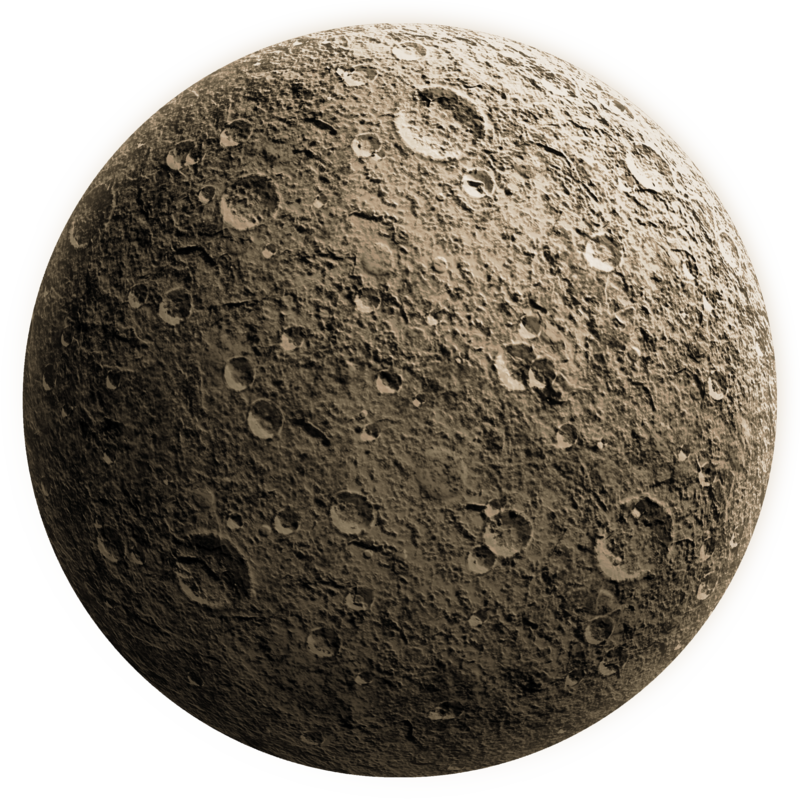
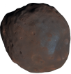
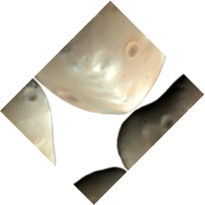
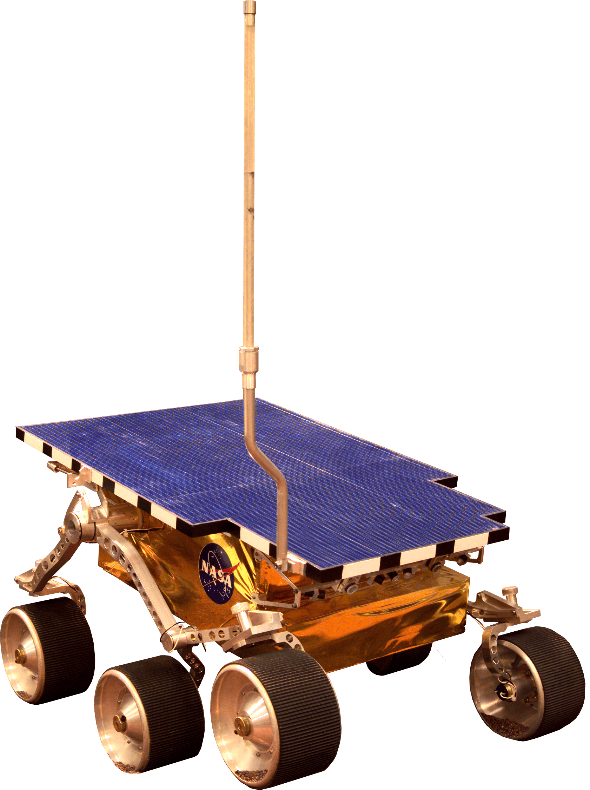
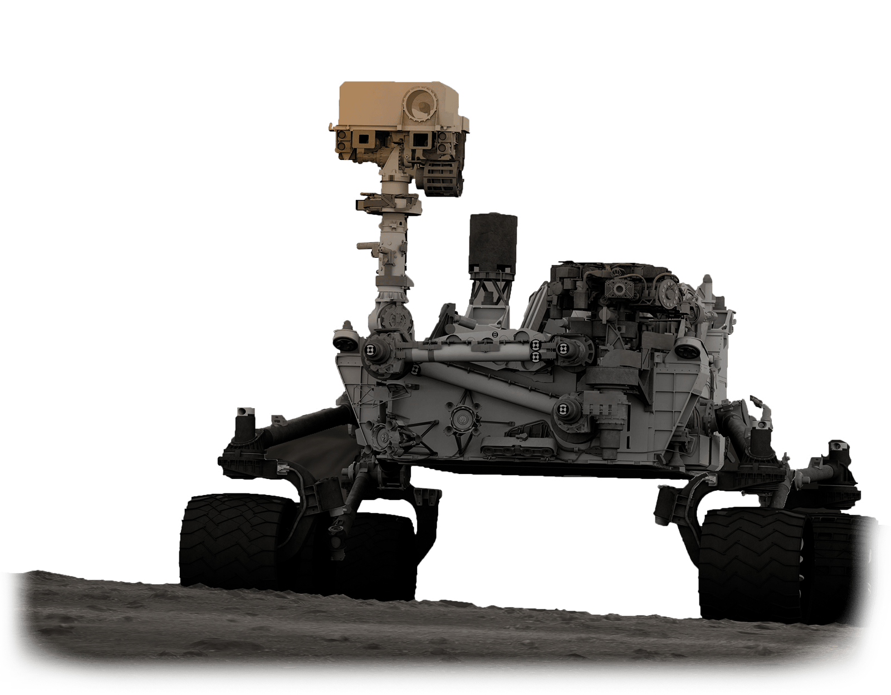
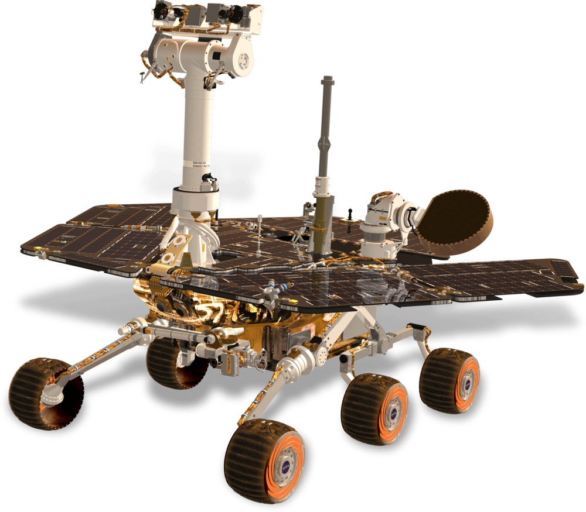
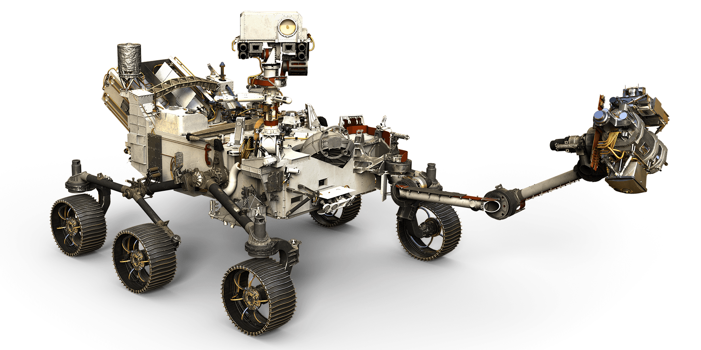

Марс
Колонизация
Цели
- Промышленная добыча ценных полезных ископаемых.
- Решение демографических проблем Земли
- Создание «Колыбели Человечества» на случай глобального катаклизма на Земле
- Создание постоянной базы для научных исследований самого Марса и его спутников, в перспективе — для изучения, а также, возможно, и колонизации пояса астероидов (в том числе добычи полезных ископаемых на них) и дальних планет Солнечной Системы
Земля
Температура
14°С
Масса
5,9726⋅10(24) кг
V орб
29,783 км/c
Площадь
510 072 000 км²
Спутник
Луна
S от солнца
149,6 млн км
Наклон
7,155°
Содержание O2
20.95%

24 часа
Период вращения Земли
ФАКТЫ О МАРСЕ
Диаметр Марса равен 6800 км. Он меньше Венеры и Земли, но больше Меркурия. Сила тяжести на поверхности Красной планеты составляет 37% от земной.
Марсианские рассветы и закаты представляют собой полную противоположность земным. Из-за рассеянной в атмосфере планеты пыли они окрашены в голубые тона.
Продолжительность средних солнечных суток на Марсе (называемых солами) составляет 24 часа 39 минут 35 секунд. Это всего на 2,7% длиннее земных суток. Марсианский год состоит из 668,6 солов.
Температура на Марсе колеблется от −153°C на полюсах зимой до +25°C на экваторе летом, в умеренных широтах — от −50°C зимней ночью до 0°C летним днем. Средняя температура Красной планеты составляет −55°C.
Марс

Спутник
Фобос
Наклон
25,192°
Масса
6,417⋅10(23)кг
S от солнца
228 млн км
Температура
-63°С
Спутник
Дэймос
V орб
24,13 км/с
Состав
- Углекислый газ: 95.32%
- Азот: 2.7%
- Аргон: 1.6%
- Кислород: 0.145%
- Угарный газ: 0.08%

24,62 ч
Период вращения Марса
ДЭЙМОС
- =15 × 12,2 × 10,4 км
- =1,48⋅10(15)кг
- g=0,003 м/с²
- ρ=1,47 г/см³
ФОБОС
- =26,8 × 22,4 × 18,4 км
- =1,072⋅10(16)кг
- g=0,0057 м/с²
- ρ=1,876 г/см³

МАРСОХОДЫ
SOJOURNER
Марсоход космического агентства НАСА, запущенный в рамках программы «Марс Патфайндер»
Задачи: изучение марса Запуск: 4 декабря 1996 года Срок существования: 83 сол
Спускаемая станция «Патфайндер», действовавшая в качестве ретранслятора вышла из строя
SPIRIT
Марсоход космического агентства НАСА, запущенный в рамках программы «Mars Exploration Rover»
Задачи: изучение марса Запуск: 10 июня 2003 Срок существования: 1944 сола
1 мая 2009 года «Спирит» застрял в песчаной дюне. Высвобождению марсохода препятствовало его расположение в мягком грунте. До 22 марта 2010 продолжали использовать как стационар
OPPORTUNITY
Марсоход космического агентства НАСА, запущенный в рамках программы «Mars Exploration Rover»
Задачи: изучение марса Запуск: 7 июля 2003 Срок существования: 4950 сол
12 июня 2018 года марсоход перешёл в спящий режим из-за длительной и мощной пылевой бури, препятствующей поступлению света на солнечные батареи, с тех пор на связь не выходил
CURIOSITY
Марсоход космического агентства НАСА, запущенный в рамках программы «Mars Exploration Program»
Задачи: Подробное изучение марса, установка пригодных условий для жизни на нем Запуск: 26 ноября 2011 Срок существования: Текущий
На данный момент находится в огромной воронке, где хорошо просматривает глубинные слои марсианского грунта
PERSEVERANCE

Марсоход космического агентства НАСА
Задачи: предназначен для астробиологических исследований древней среды на Марсе Запуск: запланирован на 23 июля 2020 года
Марсоход оценит жизнепригодность планеты, займётся поиском доказательств жизни в прошлом и продемонстрирует технологии